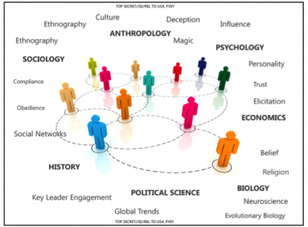
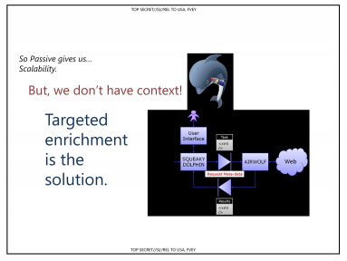

The Anxieties of Big Data
What does the lived reality of big data feel like?
2014 is the year we learned about Squeaky Dolphin. That’s the Pynchon-worthy code name for a secret program created by British intelligence agency GCHQ to monitor millions of YouTube views and Facebook likes in real time. Of course, this was just one of many en masse data-collection programs exposed in Edward Snowden’s smuggled haul. But the Squeaky Dolphin PowerPoint deck reveals something more specific. It outlines an expansionist program to bring big data together with the more traditional approaches of the social and humanistic sciences: the worlds of small data. GCHQ calls it the Human Science Operations Cell, and it is all about supplementing data analysis with broader sociocultural tools from anthropology, sociology, political science, biology, history, psychology, and economics.
From British intelligence agency GCHQ’s “Squeaky Dolphin” presentation deck
GCHQ and the NSA are the old guards of big data, and despite their enormous budgets, technical infrastructure, and trained analysts, the big-data bonanza is not enough: They are reaching for other epistemologies by the dozen to try and make sense of it all. Though, as the slide above demonstrates, the deck contains enough academic disciplines for a royal flush (including a pair of ethnographies), it will never be enough: It reads like an extraordinary testament to anxiety.
Already, the lived reality of big data is suffused with a kind of surveillant anxiety — the fear that all the data we are shedding every day is too revealing of our intimate selves but may also misrepresent us. Like a fluorescent light in a dark corridor, it can both show too much and not enough. Anxiety, as Sianne Ngai has written, has a temporality that is future oriented: it is an expectation emotion, and the expectation is generally of risk, exposure, and failure. British group Plan C in their blistering manifesto “We Are All Very Anxious” argue that anxiety is the dominant affect of our current phase of capitalism, engendering political hopelessness, insecurity, and social separation.
the lived reality of big data is suffused with a kind of surveillant anxiety — the fear that all the data we are shedding every day is too revealing of our intimate selves but may also misrepresent us. Like a fluorescent light in a dark corridor, it can both show too much and not enough. Anxiety, as Sianne Ngai has written, has a temporality that is future oriented: it is an expectation emotion, and the expectation is generally of risk, exposure, and failure. British group Plan C in their blistering manifesto “We Are All Very Anxious” argue that anxiety is the dominant affect of our current phase of capitalism, engendering political hopelessness, insecurity, and social separation.
But the trick of a dominant cultural affect is that it functions as a kind of open secret: Everyone knows it, but nobody talks about it. In order to work against it, we first have to recognize the condition and trace its contours.
From British intelligence agency GCHQ’s “Squeaky Dolphin” presentation deck
Surveillant anxiety is always a conjoined twin: The anxiety of those surveilled is deeply connected to the anxiety of the surveillers. But the anxiety of the surveillers is generally hard to see; it’s hidden in classified documents and delivered in highly coded languages in front of Senate committees. This is part of why Snowden’s revelations are so startling: They make it possible for us to see the often-obscured concerns of the intelligence agencies. And while there is an enormous structural power asymmetry between the surveillers and surveilled, neither are those with the greatest power free from being haunted by a very particular kind of data anxiety: that no matter how much data they have, it is always incomplete, and the sheer volume can overwhelm the critical signals in a fog of possible correlations.
The current mythology of big data is that with more data comes greater accuracy and truth. This epistemological position is so seductive that many industries, from advertising to automobile manufacturing, are repositioning themselves for massive data gathering. The myth and the tools, as Donna Haraway once observed, mutually constitute each other, and the instruments of data gathering and analysis, too, act as agents that shape the social world. Bruno Latour put it this way: “Change the instruments, and you will change the entire social theory that goes with them.” The turn to big data is a political and cultural turn, and we are just beginning to see its scope.
But what do you do when you realize that all that data is not enough? From the Boston bombings to Malaysian Airlines flight 370, we know that data black holes exist. Even when there were direct tip-offs about the Tsarnaevs, the data didn’t set off the right red flags. These moments demonstrate why the epistemic big-data ambition — to collect it all — is both never-ending and deeply flawed. The bigger the data gets, the more small things can be overlooked. The risk of being seduced by ghost patterns in data increases with the size of the data sets. Meanwhile, two brothers carry bomb-laden backpacks to a marathon finish line, and a Boeing 777 disappears.
So in the case of intelligence agencies, they grasp for the tools of small data in the hope that they can help mask over the black holes in big data. This admission is made multiple times in the NSA and GCHQ slides: Along with so much data come enormous technical and ethical difficulties. But the most resonant slide in the Squeaky Dolphin deck is this one, which asks the central question of surveillant anxiety:
From British intelligence agency GCHQ’s “Squeaky Dolphin” presentation deck
“What can we tell?” Well might we ask: Fittingly, half the slide is blacked out — possibly redacted for national-security reasons or possibly it was always a black space. This difficult question, What can we tell, has its reflection on the opposite side of the dialectic, in the anxiety of the surveilled: “What can they tell about me?”
To see the “consumer side” of surveillant anxiety, we can turn to K-Hole, a group of trend forecasters based in New York City, whose work straddles the gray zones between art and advertising. Whereas the NSA and GCHQ powerpoints are designed by government employees on a deadline, full of naïve clip art and network diagrams, K-Hole’s work is all about knowingness, the wink and the nudge, high-street design as critique and in-joke. The glossy PDFs they periodically issue look like spec work for a lifestyle-marketing client, but they carry cultural criticism like concealed hand grenades.
From K-Hole’s “Youth Mode: A Report on Freedom”
When K-Hole released its report “Youth Mode: A Report on Freedom,” it catapulted the term normcore onto the main stage. “Having mastered difference, the truly cool attempt to master sameness,” it argues, suggesting that the act of fitting in with the mainstream is the ultimate camouflage. Normcore is not about irony or looking normal with a twist, K-Hole insists, but “seeking the freedom that comes with non-exclusivity” and finding freedom “in being nothing special.” The PDF depicts a smartphone user scrolling through emoji, a perfectly normcore system of emotion: a taxonomy of feeling in a grid menu of ideograms. A Choose Your Own Adventure for affect.
While terms like normcore sound like they’ve slithered out from “the lexicon of dickheads,” as Huw Lemmey has argued, the word is part of K-Hole’s broader account of the complexities of life in an ever-present consumer market. In other words, they use the concept of normcore to gesture toward something much more ambiguous and interesting. I think it captures precisely this moment of mass surveillance meeting mass consumerism. It reflects the dispersed anxiety of a populace that wishes nothing more than to shed its own subjectivity.
Normcore, as it was invented by K-Hole, is an eerily accurate model of cultural anxiety, but after the term was adopted by the mainstream fashion press, it became something else. It became “the look of nothing.” An article in New York magazine by Fiona Duncan noted that some art kids were now dressing like middle-aged tourists from the midwest. Cool was supposedly now about nonironic T-shirts, New Balance sneakers, and Jerry Seinfeldian high-waist jeans. Where K-Hole’s account of normcore was about adaptability and “strategic misinterpretation,” the fashion press made it about championing generic “dork-wear” to create coolness out of anti-cool.
Still, the rapid rise of the term normcore is an indication of how the cultural idea of disappearing has become cool at the very historical moment when it has become almost impossible because of big data and widespread surveillance. Blending in gives you a particular kind of power when standing out means being put on the no-fly list for 10 years or a predictive-policing heat list in Chicago, or earns you a chilling anonymous SMS for attending a street protest in Ukraine.
And it’s worth remembering that the other New York group that recently recommended dressing like a tourist: Occupy Wall Street. OWS hosted “civilians” workshops, where participants were encouraged to “dress to blend” and “look like tourists” as a way to avoid police attention. While OWS protesters were dressing like tourists to evade a specific threat, normcore is meant to be more dispersed and continuous: being permanently inconspicuous and opting for a comfortable sameness. What was a temporary tactic for Occupy has become an ongoing strategy for K-Hole. And what used to be about donning camouflage to confuse the NYPD at the barricades has now become a matter of resisting the fashion police as well as the socio-technical matrices of always been seen, photographed, and tracked.
But being able to “blend in” or “pass” is a very exclusive form of privilege. In the words of Cat Smith, who writes about disability and fashion, “the ‘look of nothing’ is never going to be available to those who are marked as ‘other’ because the world has already placed identifiable markers on us.” So who can be normcore? Who can be just one of the mass, just one anonymized data point among millions? Or, in the classic formulation, who has nothing to hide?
There’s already a rich history to answer these questions. As Virginia Eubanks’s work has shown, if you want to see the future of surveillance, look to poor communities. Her work with low-income Americans on welfare benefits has shown the degree to which tracking for them has been normalized, from Electronic Benefit Transfer cards recording every purchase to higher levels of neighborhood police scrutiny and camera surveillance. While these tools and techniques of data tracking have now been broadened to ensnare the whole population, their greatest impact is still felt by marginalized communities.
If we take these twinned anxieties — those of the surveillers and the surveilled — and push them to their natural extension, we reach an epistemological end point: on one hand, the fear that there can never be enough data, and on the other, the fear that one is standing out in the data. These fears reinforce each other in a feedback loop, becoming stronger with each turn of the ratchet. As people seek more ways to blend in — be it through normcore dressing or hardcore encryption — more intrusive data collection techniques are developed. And yet, this is in many ways the expected conclusion of big data’s neopositivist worldview. As historians of science Lorraine Daston and Peter Galison once wrote, all epistemology begins in fear — fear that the world cannot be threaded by reason, fear that memory fades, fear that authority will not be enough.
If the big-data fundamentalists argue that more data is inherently better, closer to the truth, then there is no point in their theology at which enough is enough. This is the radical project of big data. It is epistemology taken to its limit. The affective residue from this experiment is the Janus-faced anxiety that is heavy in the air, and it leaves us with an open question: How might we find a radical potential in the surveillant anxieties of the big-data era?